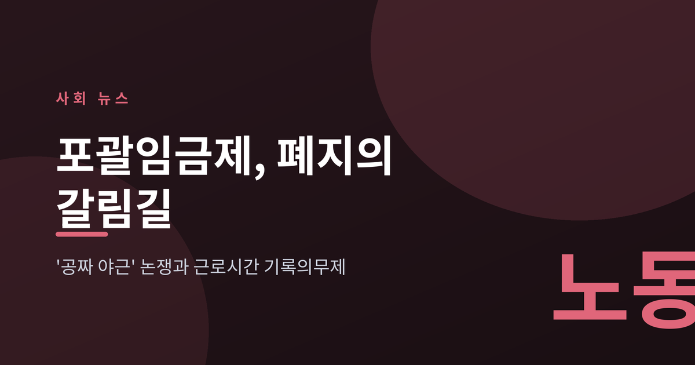
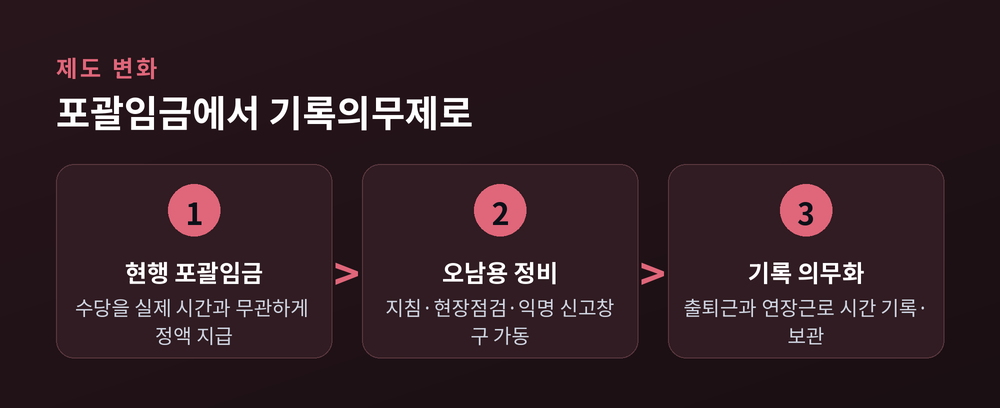
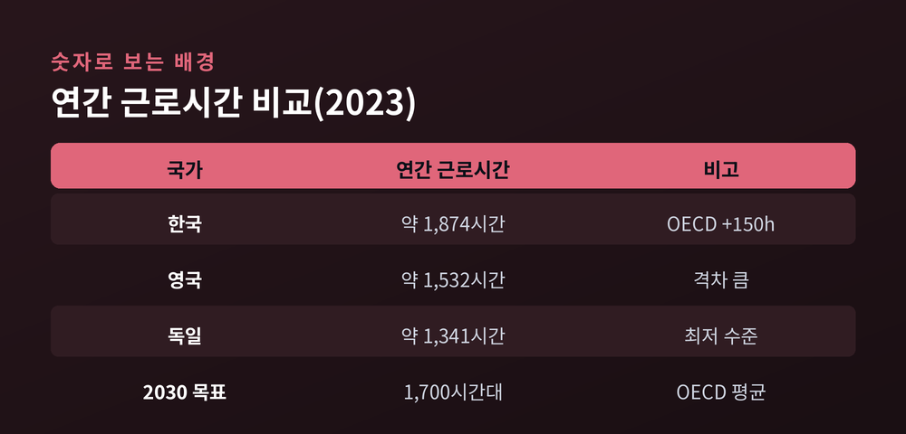
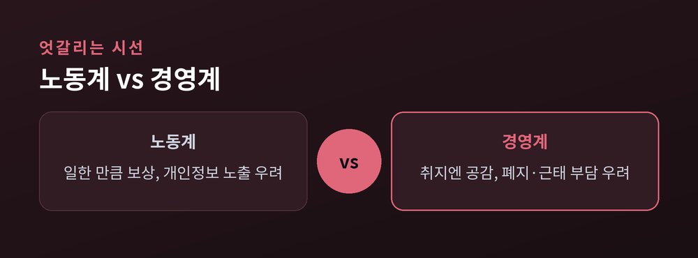

'공짜 야근' 논쟁과 근로시간 기록의무제

이번 글에서는 최근 다시 뜨거워진 포괄임금제 논쟁을 정리해 보겠습니다. 정부가 실노동시간 단축 로드맵을 내걸면서, 미리 정한 수당으로 야근을 뭉뚱그리던 관행이 시험대에 올랐습니다. 무엇이 바뀌려 하는지, 왜 중요한지, 그리고 어디로 향할지를 차분히 짚어 보려 합니다.
포괄임금제는 연장·야간·휴일 수당을 실제 일한 시간과 상관없이 미리 정한 금액으로 지급하는 방식입니다. 오래 일해도 정해진 만큼만 받는 구조라, 노동계는 오랫동안 이를 '공짜 야근'의 온상이라 불러 왔습니다.
정부는 이 관행에 제동을 걸기 시작했습니다. 고용노동부는 포괄임금 오남용 방지 지침을 내놓고 현장 점검에 들어갔습니다. 익명 신고 창구도 열었습니다. 전면 폐지를 위한 법 개정은 아직 국회 심의 단계에 머물러 있습니다만, 방향은 분명합니다.
핵심 짝은 근로시간 기록의무제입니다. 포괄임금이 사라지면 모든 사업장이 실제 출퇴근 시각과 연장근로 시간을 정확히 기록하고 보관해야 합니다. 시간을 재야 수당을 계산할 수 있기 때문입니다.

이 논의는 단순한 규제 강화가 아닙니다. 정부의 실노동시간 단축 로드맵과 궤를 같이합니다.
2023년 기준 우리나라 임금노동자의 연간 근로시간은 약 1,874시간이었습니다. OECD 평균보다 150시간 넘게 깁니다. 독일(약 1,341시간)이나 영국(약 1,532시간)과는 격차가 더 큽니다. 정부는 2030년까지 이 수치를 OECD 평균 수준인 1,700시간대로 낮추겠다고 밝혔습니다.
목표를 이루려면 먼저 시간을 투명하게 재야 합니다. 얼마나 일하는지 모르면 얼마나 줄었는지도 알 수 없습니다. 포괄임금제 정비가 로드맵의 첫 단추로 꼽히는 이유입니다.

같은 정책을 두고 두 진영의 셈법은 다릅니다.
노동계는 대체로 환영합니다. 일한 만큼 정확히 보상받게 하는 것은 중요하다는 입장입니다. 다만 우려도 함께 답니다. 출퇴근을 촘촘히 기록하는 과정에서 위치추적 같은 과도한 개인정보 노출이 생기면 그 또한 문제가 될 수 있다고 봅니다.
경영계는 부담을 이야기합니다. 장시간 근로를 줄이는 취지에는 공감하면서도, 전면 폐지와 관련 법·지침 개정은 사용자 측에 만만치 않은 짐이라고 말합니다. 특히 중소기업은 근태 관리 시스템을 새로 갖추는 비용과 실무 부담을 걱정합니다.
예전엔 야근이 개인의 헌신으로 뭉뚱그려졌습니다. 지금은 그 시간을 숫자로 남기라는 요구가 커졌습니다. 노사 어느 쪽도 방향 자체를 부정하지는 않습니다. 다투는 지점은 속도와 방법입니다.

당장 모든 것이 한꺼번에 바뀌지는 않을 것입니다. 법 개정이 국회 문턱을 넘어야 하고, 업종별 특성을 반영한 세부 지침도 남았습니다.
그럼에도 흐름은 한 방향을 가리킵니다. 노동시간을 재고 기록하는 일이 선택이 아니라 기본이 되는 쪽입니다. 근태 관리 방식과 급여 명세서의 구조가 바뀔 수 있습니다. 기업으로서는 미리 대비할수록 충격이 작아집니다.
물론 한계도 있습니다. 기록 의무가 곧바로 실노동시간 단축으로 이어지지는 않습니다. 기록만 정교해지고 일의 총량은 그대로일 수도 있습니다. 제도의 성패는 결국 현장의 문화가 함께 움직이느냐에 달려 있습니다.
포괄임금제 논쟁의 본질은 결국 시간을 어떻게 대할 것인가입니다. 보이지 않던 야근을 숫자로 드러내는 일에서 변화는 시작됩니다.
— 재지 않으면, 줄일 수도 없습니다.
일한 시간을 정직하게 기록하는 사회로 갈 수 있을지, 앞으로의 입법 논의가 그 답을 말해 줄 것입니다.
참고 출처: 고용노동부, 대한민국 정책브리핑, 한국개발연구원(KDI), 시사저널e